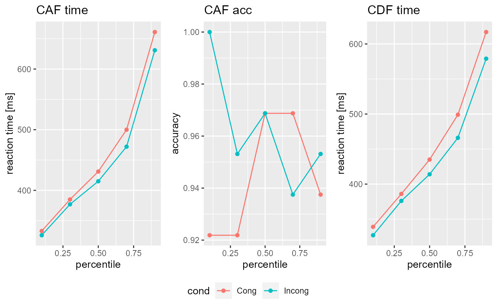

vignettes/Tutorials/Import_data.Rmd
Import_data.RmdImporting data into DDModeling is done by calling the function DDRep() which takes two arguments model and data. model represents a DDModel object (see here for a tutorial). raw specifies the raw data from a given experiment. For a successful import, raw must follow a formatting convention. This convention is examined in the following section.
The raw data in the DDModeling package is handled in data.frames, which contain three coulmns:
The naming convention within the cond could be free, but you must ensure that the factor names match the model within the DDRep() function, which means that the conditions specified in the model must match those in your data! resp on the other hand follows a uniform coding scheme: The value 0 represents an attempt that led to an error (i.e. wrong answer) and the value 1 represents an attempt that led to a success (i.e. correct answer). The time must be given in rounded millisecond format, i.e. only natural numbers are allowed.
For demonstration purposes, DDModeling comes with a predefined data set FLANKER_DATA representing 64 data sets (i.e. subjects) of a flanker task experiment with 320 experiments per condition. If you want to import data into DDModeling, your data should look like this
library(DDModeling) #> Lade nötiges Paket: data.table head(FLANKER_DATA[[1]]) #> cond time resp #> 1 Cong 554 1 #> 2 Incong 613 0 #> 3 Cong 833 0 #> 4 Cong 433 1 #> 5 Cong 578 1 #> 6 Incong 439 1
After you formated your data according to the above conventions and constructed an according DDModel importing it is rather simple.
DSTP <- DDModel(model="DSTP",task = "flanker",CDF_perc = c(0.1,0.3,0.5,0.7,0.9), CAF_perc = c(0.0,0.2,0.4,0.6,0.8,1.0)) Subj <- DDRep(model = DSTP,raw = FLANKER_DATA[[1]])
Finally you can take a look at your imported data simply by calling the object or using the plot() function.
Subj #> CDF: #> $Cong #> cond perc time N #> 1 Cong 0.1 339 30 #> 2 Cong 0.3 386 90 #> 3 Cong 0.5 435 151 #> 4 Cong 0.7 499 211 #> 5 Cong 0.9 617 271 #> #> $Incong #> cond perc time N #> 1 Incong 0.1 327 30 #> 2 Incong 0.3 376 92 #> 3 Incong 0.5 414 154 #> 4 Incong 0.7 466 215 #> 5 Incong 0.9 579 277 #> #> #> CAF: #> $Cong #> cond perc time acc N_A N_B #> 1 Cong 0.1 333 0.921875 59 5 #> 2 Cong 0.3 385 0.921875 59 5 #> 3 Cong 0.5 431 0.968750 62 2 #> 4 Cong 0.7 500 0.968750 62 2 #> 5 Cong 0.9 661 0.937500 60 4 #> #> $Incong #> cond perc time acc N_A N_B #> 1 Incong 0.1 326 1.000000 64 0 #> 2 Incong 0.3 377 0.953125 61 3 #> 3 Incong 0.5 415 0.968750 62 2 #> 4 Incong 0.7 472 0.937500 60 4 #> 5 Incong 0.9 631 0.953125 61 3 #> #> #> Parameter: #> Ter a c mu_t mu_f mu_RS2 mu_SS #> 1 0 0 0 0 0 0 0 plot(Subj)
